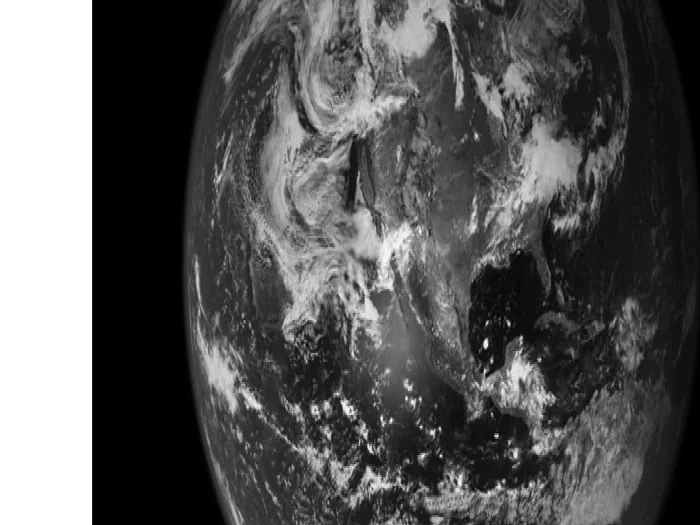
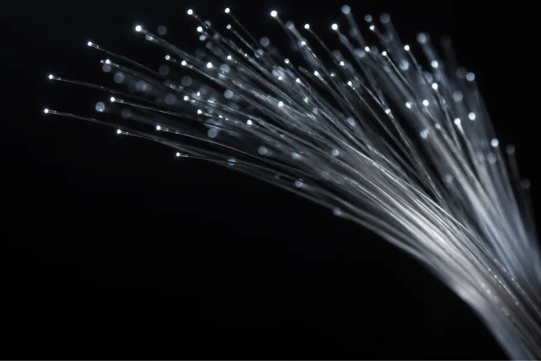
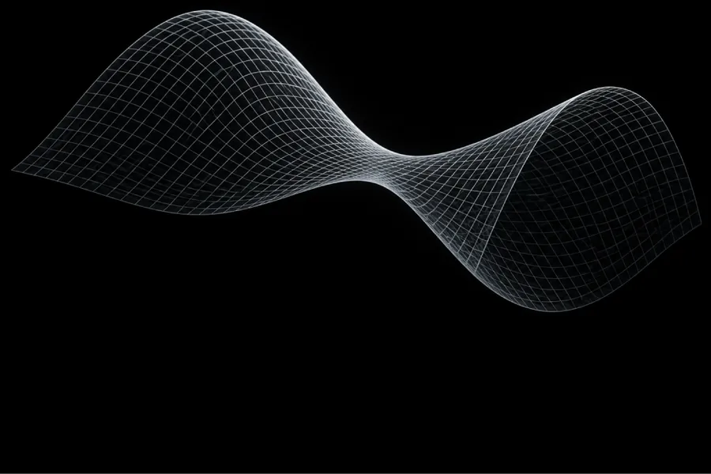
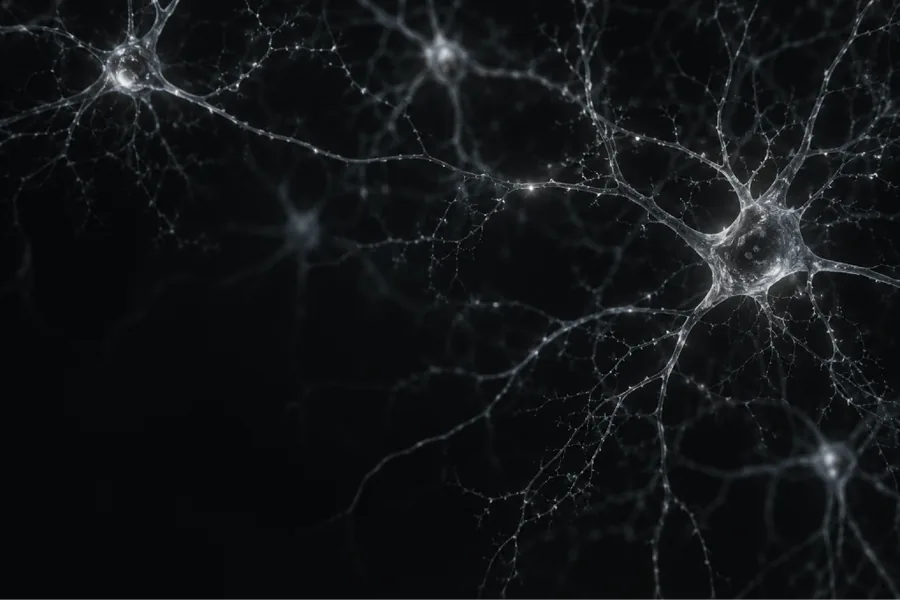

PROYECTO 01Exosfera terrestre
Explora la exosfera terrestre a través de herramientas de física espacial y métodos numéricos.
2 vacantes6–9 h/semana
Ver requisitos en el catálogo 
Una convocatoria para estudiantes de Física.
Desarrolla un proyecto de investigación con el acompañamiento de un mentor.
Explora los seis proyectos. Cada uno tiene sus propios requisitos, modalidad de trabajo y dedicación.

PROYECTO 01Explora la exosfera terrestre a través de herramientas de física espacial y métodos numéricos.

PROYECTO 02Estudia fuentes de luz y su relación con la criptografía cuántica.

PROYECTO 03Trabaja con herramientas de física teórica aplicadas a sistemas de reacción-difusión.

PROYECTO 04Explora redes neuronales, inteligencia artificial y desarrollo cerebral.
Estudia la propagación de ondas P y S con herramientas de elasticidad y simulación.
Aborda el problema de Stefan con ecuaciones diferenciales y técnicas de Deep Learning.
Estas son descripciones breves para orientarte. Revisa los títulos completos, los conocimientos requeridos y el material adicional de cada proyecto en el catálogo oficial.
Abrir catálogoPróximamente compartiremos las experiencias de dos participantes de Research Sprint 2026.
Una experiencia en primera persona.
PróximamenteUna experiencia en primera persona.
PróximamenteElige con calma. Busca un proyecto que conecte con tus intereses y con el tiempo que puedes dedicarle.
Conoce las preguntas de investigación, los requisitos y la dedicación de cada proyecto.
Selecciona hasta tres proyectos en el orden en que te gustaría participar.
Prepara los materiales adicionales que soliciten tus proyectos y completa el formulario oficial.
A estudiantes de Física que quieran desarrollar un proyecto de investigación con mentoría. Revisa los requisitos específicos de cada proyecto en el catálogo antes de postular.
El programa se desarrolla durante 12 semanas, del 11 de enero al 4 de abril de 2027.
Depende del proyecto. El catálogo contempla dedicaciones desde 3–5 hasta 10 o más horas por semana. Revisa la ficha que te interesa antes de postular.
Sí. Puedes seleccionar hasta tres proyectos y ordenarlos por preferencia en tu postulación.
La modalidad depende del proyecto. Algunas fichas contemplan reuniones preferentemente presenciales. Consulta el catálogo para conocer la forma de trabajo de cada mentor.
Cada ficha distingue los conocimientos requeridos y los deseables. Algunos proyectos solicitan materiales adicionales, como un ensayo, un video o una respuesta a una pregunta. Revisa la ficha completa y las indicaciones del formulario.
Escríbenos a derivatesanmarcos@gmail.com. Indica el proyecto que te interesa para que podamos orientarte.
Summer Sprint 2027 · 6 proyectos · 8 vacantes